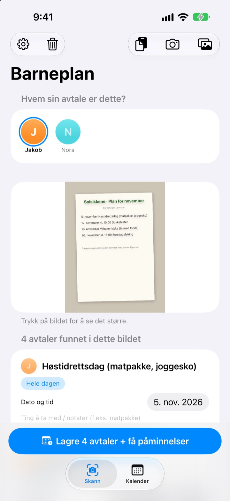
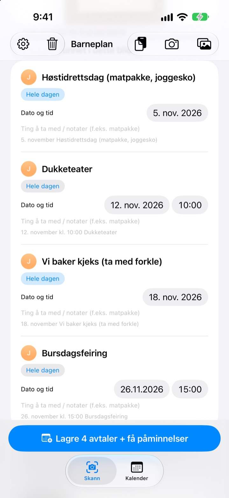
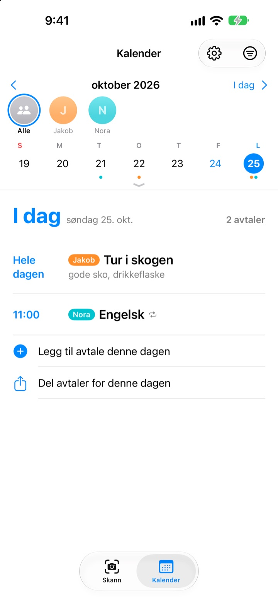
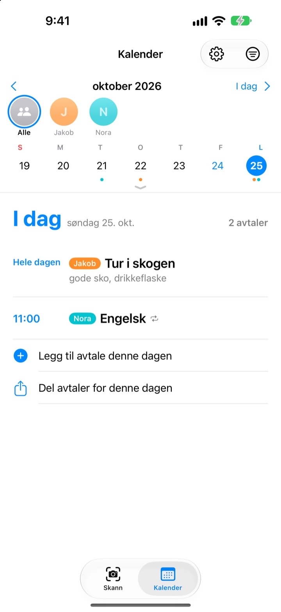

Bare ta et bilde.
Vi minner om pakkingen.
Ta bilde av månedsplanen du får med hjem fra barnehagen. Barneplan leser datoer, klokkeslett og navn på aktivitetene og legger dem inn på én gang. Kvelden før turen, klokka 20, kommer påminnelsen: husk matpakka.
Alle funksjoner er gratis. Bildene forlater aldri iPhonen din.

Ta bilde av en beskjed
Her er en eksempelbeskjed med aktivitetene neste måned. Ta bilde av den, så hentes aktiviteter og pakkeliste ut akkurat som i appen, og påminnelsene planlegges til tidspunktene du velger.
Skriver du fortsatt av barnehagelappen i kalenderen?
Fem–seks aktiviteter i måneden, og hver gang skal noe annet med: matpakke, gymtøy, forkle. Planen på kjøleskapet ser du ikke på vei til jobb, og du kommer alltid på det samme morgen. Barneplan gjør den papirlappen om til kalenderavtaler og påminnelser.
Ett bilde, hele måneden
Månedsskjema, foreldreskriv eller enkeltoppslag: ta bilde eller velg fra bildebiblioteket, så leses datoer, klokkeslett og aktiviteter for deg. Du kan også lime inn en melding fra barnehagen; ord som «i morgen» og «på fredag» blir til ekte datoer.
Før du lagrer, retter du tittel, dato eller pakkeliste med en gang og sveiper bort det du ikke trenger. Skriv inn avdelingen til barnet, så sorteres aktiviteter bare for andre avdelinger bort.

Kvelden før får du beskjed
Velg mellom kl. 20 kvelden før, kl. 7.30 samme morgen, 1 time før eller akkurat på tiden. Pakkelista står i påminnelsen, så sekken blir pakket.
Med Apple Kalender havner avtalene i en kalender med barnets navn, og ingenting legges inn to ganger.

Flere barn og hele familien
Hvert barn får sin egen farge. Se alle samlet eller ett om gangen, og ut fra tidligere avtaler gjetter appen hvem en ny lapp gjelder.
Send en invitasjonslenke, så kan partner, besteforeldre eller barnevakt se og endre de samme avtalene. En widget på Hjem-skjermen viser hva som kommer.

I gang på tre steg
- 1
Legg til barnet
Navn og avdeling. Profilbilde kan du legge til når du vil.
- 2
Ta bilde av lappen
Rett forfra og med skarp tekst blir den lest best.
- 3
Sjekk og lagre
Tillat varslinger, så kommer påminnelsene når du har valgt.
Når kommer påminnelsene
- Kl. 20.00 kvelden før
- For å pakke. På fra start
- Kl. 7.30 samme morgen
- Dagens plan. På fra start
- 1 time før
- Bare for aktiviteter med klokkeslett
- På tidspunktet
- Bare for aktiviteter med klokkeslett
Heldagsaktiviteter som en tur får bare påminnelsen kvelden før og samme morgen. Du kan slå hver av dem av og på i innstillingene når som helst.
Alle funksjoner er gratis
Gratis
- Aktiviteter lest fra bilder og meldinger
- Rett før du lagrer, sorter bort andre avdelinger
- Påminnelser kvelden før, om morgenen, 1 time før og på tiden
- Egen farge per barn og en felles kalender
- Synkronisering med Apple Kalender
- Deling med familien via lenke
- Widget på Hjem-skjermen
Støtt utvikleren
- I innstillingene kan du gi litt tips, så mye du vil
- Tips låser ikke opp noe. Appen virker likt uten
Ingen reklame, ikke noe abonnement.
Vanlige spørsmål
Hvilke bilder fungerer?
Månedsplaner i rutenett, foreldreskriv skrevet som tekst og enkeltoppslag eller flygeblader. Et bilde tatt rett forfra med skarp tekst leses best. Du kan også velge flere bilder og skanne dem på én gang.
Det mangler et par aktiviteter, eller en tittel har en skrivefeil.
Håndskrift og svak tekst kan være vanskelig å lese. Rett tittel, dato eller pakkeliste direkte i lista, eller sveip bort det du ikke trenger. En manglende aktivitet legger du til med «Legg til avtale manuelt» i Skann-fanen, og så lagrer du på nytt.
Jeg får ingen påminnelser.
Sjekk under Innstillinger > Varslinger > Barneplan at varslinger er tillatt. I appens innstillinger (⚙️) velger du også hvilke påminnelser du vil ha.
Aktiviteter fra andre avdelinger dukker opp.
Skriv navnet på avdelingen til barnet i innstillingene, så sorteres aktiviteter bare for andre avdelinger bort. Bytter barnet avdeling, endrer du det bare der.
Jeg har flere barn.
I innstillingene kan du legge til så mange barn du vil, hvert med profilbilde. Velg ved skanning hvem aktivitetene gjelder: I kalenderen har hvert barn sin farge, og du kan bytte mellom samlet visning og filter per barn.
Hvordan deler jeg planen med partneren min?
Gå til «Deling av avtaler» i innstillingene, trykk på «Inviter til deling», og send lenken i en melding. Den inviterte kan se og endre alle barn og avtaler, og endringer fra begge sider vises straks hos begge. Det har ingenting med Apples Familiedeling å gjøre.
Kan man dele på andre måter?
Med del-knappen i Kalender-fanen sender du en Barneplan-fil, en kalenderfil (.ics) eller et tekstsammendrag. Med «Legg også til i Apple Kalender» lages en kalender med barnets navn; deler du den via iCloud i Kalender-appen, holder familien seg også oppdatert.
Blir bildene eller avtalene mine sendt noe sted?
Nei. Teksten på bildene leses helt på enheten, og dataene lagres bare der. Avtaler går bare via din iCloud hvis du inviterer noen med «Deling av avtaler», og bare til dem du har invitert.
Problemer eller ønsker? Skriv til leeo@kakao.com. Vi svarer vanligvis innen 2–3 dager. Oppgi gjerne enhetsmodell og iOS-versjon.